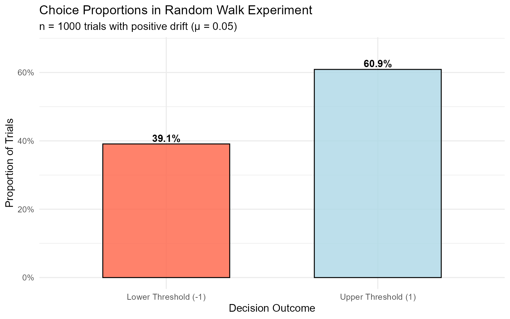
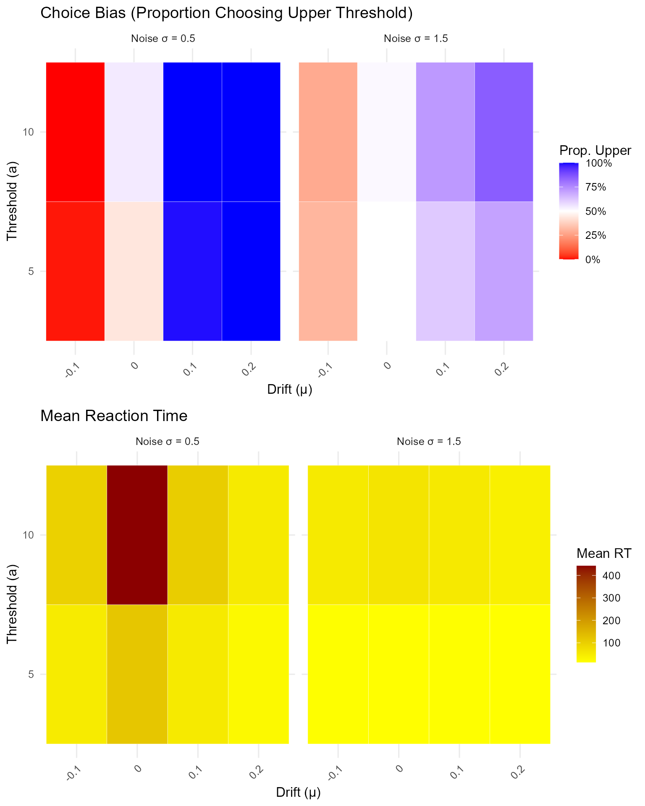

Introduction to Random Walks in R
Dogukan Nami Oztas
2025-05-16
01_introduction_to_random_walks.RmdWhat is a Random Walk?
A random walk is a mathematical object, known as a stochastic or random process, that describes a path consisting of a succession of random steps. In our context, we’ll focus on one-dimensional random walks where a particle (representing evidence) moves along a line, taking random steps at each time point.
Mathematical Foundation
The discrete-time random walk model can be mathematically expressed as:
where: - is the evidence at time - is the drift (average step size per time unit) - is random noise (Gaussian white noise)
The process continues until the evidence crosses one of two decision boundaries: - Upper threshold: → Decision “A” (choice = 1) - Lower threshold: → Decision “B” (choice = -1)
Connection to Decision Making
Random walks are fundamental to understanding decision-making models, particularly the Diffusion Decision Model (DDM). In psychological terms:
- Evidence accumulation: Information gradually builds up over time
- Decision thresholds: The amount of evidence needed to make a decision
- Drift: Bias toward one option over another
- Noise: Uncertainty and variability in the decision process
Simulating a Single Random Walk Trial
Let’s start by understanding how a single decision unfolds. We’ll use
the simulate_random_walk_trial() function to simulate
individual trials and visualize the evidence accumulation process.
Basic Single Trial Simulation
set.seed(123) # For reproducibility
# Example 1: Positive drift (bias toward upper threshold)
trial1 <- simulate_random_walk_trial(drift = 0.2, threshold = 5, sd_step = 1, return_path = TRUE)
cat("Trial 1 (positive drift):\n")## Trial 1 (positive drift):
cat("Choice =", trial1$choice, ", RT (steps) =", trial1$rt, "\n\n")## Choice = 1 , RT (steps) = 13
# Example 2: Negative drift (bias toward lower threshold)
trial2 <- simulate_random_walk_trial(drift = -0.15, threshold = 5, sd_step = 1, return_path = TRUE)
cat("Trial 2 (negative drift):\n")## Trial 2 (negative drift):
cat("Choice =", trial2$choice, ", RT (steps) =", trial2$rt, "\n\n")## Choice = -1 , RT (steps) = 12
# Example 3: No drift (unbiased)
trial3 <- simulate_random_walk_trial(drift = 0, threshold = 5, sd_step = 1, return_path = TRUE)
cat("Trial 3 (no drift):\n")## Trial 3 (no drift):
cat("Choice =", trial3$choice, ", RT (steps) =", trial3$rt, "\n")## Choice = 1 , RT (steps) = 31Visualizing Evidence Accumulation Paths
The power of the random walk model becomes clear when we visualize how evidence accumulates over time:
# Create plots for the three trials
plot_list <- list()
# Trial 1: Positive drift
plot_list[[1]] <- {
df1 <- data.frame(
time = 0:(length(trial1$evidence_path) - 1),
evidence = trial1$evidence_path
)
ggplot(df1, aes(x = time, y = evidence)) +
geom_line(color = "blue", size = 1) +
geom_hline(yintercept = c(-5, 5), linetype = "dashed", color = "red", size = 1) +
geom_hline(yintercept = 0, linetype = "dotted", color = "gray") +
geom_point(data = df1[nrow(df1), ], color = "red", size = 3) +
labs(title = "Trial 1: Positive Drift (μ = 0.2)",
subtitle = paste("Choice:", trial1$choice, "| RT:", trial1$rt, "steps"),
x = "Time Steps", y = "Evidence") +
ylim(-6, 6) +
annotate("text", x = max(df1$time) * 0.1, y = 5.5, label = "Upper Threshold", color = "red") +
annotate("text", x = max(df1$time) * 0.1, y = -5.5, label = "Lower Threshold", color = "red")+
xlim(-0.5, 15)
}
# Trial 2: Negative drift
plot_list[[2]] <- {
df2 <- data.frame(
time = 0:(length(trial2$evidence_path) - 1),
evidence = trial2$evidence_path
)
ggplot(df2, aes(x = time, y = evidence)) +
geom_line(color = "darkgreen", size = 1) +
geom_hline(yintercept = c(-5, 5), linetype = "dashed", color = "red", size = 1) +
geom_hline(yintercept = 0, linetype = "dotted", color = "gray") +
geom_point(data = df2[nrow(df2), ], color = "red", size = 3) +
labs(title = "Trial 2: Negative Drift (μ = -0.15)",
subtitle = paste("Choice:", trial2$choice, "| RT:", trial2$rt, "steps"),
x = "Time Steps", y = "Evidence") +
ylim(-6, 6)+
xlim(-0.5, 15)
}
# Trial 3: No drift
plot_list[[3]] <- {
df3 <- data.frame(
time = 0:(length(trial3$evidence_path) - 1),
evidence = trial3$evidence_path
)
ggplot(df3, aes(x = time, y = evidence)) +
geom_line(color = "purple", size = 1) +
geom_hline(yintercept = c(-5, 5), linetype = "dashed", color = "red", size = 1) +
geom_hline(yintercept = 0, linetype = "dotted", color = "gray") +
geom_point(data = df3[nrow(df3), ], color = "red", size = 3) +
labs(title = "Trial 3: No Drift (μ = 0)",
subtitle = paste("Choice:", trial3$choice, "| RT:", trial3$rt, "steps"),
x = "Time Steps", y = "Evidence") +
ylim(-6, 6) +
xlim(-0.5, 15)
}
# Arrange plots
do.call(grid.arrange, c(plot_list, ncol = 1))Key Observations: - Positive drift
tends to push evidence toward the upper threshold - Negative
drift tends to push evidence toward the lower threshold
- No drift creates a symmetric random walk where either
outcome is equally likely - The red dot shows where the
threshold was crossed - Noise creates the zigzag
pattern in the evidence accumulation
Exploring Parameter Effects
Let’s explore how different parameters affect the random walk behavior:
set.seed(456)
# Generate multiple trials with different parameters
param_trials <- list(
low_noise = simulate_random_walk_trial(drift = 0.1, threshold = 5, sd_step = 0.5, return_path = TRUE),
high_noise = simulate_random_walk_trial(drift = 0.1, threshold = 5, sd_step = 2, return_path = TRUE),
low_threshold = simulate_random_walk_trial(drift = 0.1, threshold = 2, sd_step = 1, return_path = TRUE),
high_threshold = simulate_random_walk_trial(drift = 0.1, threshold = 8, sd_step = 1, return_path = TRUE)
)
# Create comparison plots
param_plots <- list()
for (i in 1:length(param_trials)) {
trial_name <- names(param_trials)[i]
trial_data <- param_trials[[i]]
df_temp <- data.frame(
time = 0:(length(trial_data$evidence_path) - 1),
evidence = trial_data$evidence_path
)
# Determine threshold value for plotting
threshold_val <- switch(trial_name,
"low_threshold" = 2,
"high_threshold" = 8,
5) # default
param_plots[[i]] <- ggplot(df_temp, aes(x = time, y = evidence)) +
geom_line(color = "steelblue", size = 1) +
geom_hline(yintercept = c(-threshold_val, threshold_val),
linetype = "dashed", color = "red", size = 1) +
geom_hline(yintercept = 0, linetype = "dotted", color = "gray") +
geom_point(data = df_temp[nrow(df_temp), ], color = "red", size = 3) +
labs(title = switch(trial_name,
"low_noise" = "Low Noise (σ = 0.5)",
"high_noise" = "High Noise (σ = 2.0)",
"low_threshold" = "Low Threshold (a = 2)",
"high_threshold" = "High Threshold (a = 8)"),
subtitle = paste("Choice:", trial_data$choice, "| RT:", trial_data$rt, "steps"),
x = "Time Steps", y = "Evidence") +
ylim(-10, 10) +
xlim(-0.5, 20)
}
do.call(grid.arrange, c(param_plots, ncol = 2))Simulating a Random Walk Experiment
To understand the statistical properties of the random walk model, we need to simulate many trials. Let’s conduct a comprehensive experiment:
set.seed(789)
n_sim_trials <- 1000
# Simulate experiment with moderate parameters
rw_data <- simulate_random_walk_experiment(
n_trials = n_sim_trials,
threshold = 10,
drift = 0.05, # Slight positive drift
sd_step = 1.5,
show_progress = FALSE
)
# Display basic statistics
cat("Experiment Summary:\n")## Experiment Summary:## Total trials simulated: 1000## Trials with valid decisions: 1000## Proportion of valid decisions: 1
# Display the first few rows
knitr::kable(head(rw_data),
caption = "First 6 trials of the simulated random walk experiment.")| trial | choice | rt |
|---|---|---|
| 1 | -1 | 25 |
| 2 | 1 | 40 |
| 3 | -1 | 136 |
| 4 | -1 | 60 |
| 5 | 1 | 68 |
| 6 | 1 | 24 |
Analyzing Experiment Results
1. Choice Proportions and Accuracy
# Filter out NA choices and create summary
valid_choices <- rw_data %>%
filter(!is.na(choice)) %>%
mutate(choice_label = factor(choice,
levels = c(-1, 1),
labels = c("Lower Threshold (-1)", "Upper Threshold (1)")))
if(nrow(valid_choices) > 0) {
# Calculate choice proportions
choice_summary <- valid_choices %>%
count(choice_label) %>%
mutate(proportion = n / sum(n))
# Create summary table
knitr::kable(choice_summary %>%
select(choice_label, n, proportion),
col.names = c("Choice Outcome", "Count (N)", "Proportion"),
caption = "Summary of Choice Proportions",
digits = 3)
# Create visualization
p_choice <- ggplot(choice_summary, aes(x = choice_label, y = proportion, fill = choice_label)) +
geom_bar(stat = "identity", color = "black", alpha = 0.8, width = 0.6) +
geom_text(aes(label = percent(proportion, accuracy = 0.1)),
vjust = -0.3, size = 4, fontface = "bold") +
scale_y_continuous(labels = percent_format(accuracy = 1),
limits = c(0, max(choice_summary$proportion) * 1.1)) +
scale_fill_manual(values = c("tomato", "lightblue")) +
labs(title = "Choice Proportions in Random Walk Experiment",
subtitle = paste("n =", nrow(valid_choices), "trials with positive drift (μ = 0.05)"),
x = "Decision Outcome", y = "Proportion of Trials") +
theme(legend.position = "none")
print(p_choice)
# Statistical test for bias
if (length(unique(valid_choices$choice)) == 2) {
bias_test <- binom.test(sum(valid_choices$choice == 1), nrow(valid_choices), p = 0.5)
cat("\nStatistical Test for Bias:\n")
cat("Binomial test p-value:", round(bias_test$p.value, 6), "\n")
cat("95% CI for upper threshold proportion:",
round(bias_test$conf.int[1], 3), "-", round(bias_test$conf.int[2], 3), "\n")
}
} else {
cat("No valid choices to analyze (all trials may have resulted in timeouts).\n")
}
##
## Statistical Test for Bias:
## Binomial test p-value: 0
## 95% CI for upper threshold proportion: 0.578 - 0.639With a positive drift (μ = 0.05), we expect more choices for the upper threshold, which represents the “correct” or “preferred” response in a decision-making context.
2. Reaction Time (RT) Distributions
if(nrow(valid_choices) > 0) {
# RT summary statistics
rt_summary <- valid_choices %>%
group_by(choice_label) %>%
summarise(
N = n(),
Mean_RT = round(mean(rt, na.rm = TRUE), 1),
Median_RT = round(median(rt, na.rm = TRUE), 1),
SD_RT = round(sd(rt, na.rm = TRUE), 1),
Min_RT = min(rt, na.rm = TRUE),
Max_RT = max(rt, na.rm = TRUE),
.groups = "drop"
)
knitr::kable(rt_summary,
caption = "Summary Statistics for RTs by Choice Outcome")
# Create RT distribution plots
p1 <- ggplot(valid_choices, aes(x = rt, fill = choice_label)) +
geom_histogram(bins = 30, alpha = 0.7, color = "black") +
facet_wrap(~choice_label, scales = "free_y", ncol = 1) +
scale_fill_manual(values = c("tomato", "lightblue")) +
labs(title = "RT Distributions by Choice Outcome",
x = "Reaction Time (Steps)", y = "Frequency",
fill = "Choice") +
theme(legend.position = "none")
# Box plot comparison
p2 <- ggplot(valid_choices, aes(x = choice_label, y = rt, fill = choice_label)) +
geom_boxplot(alpha = 0.7, width = 0.6) +
geom_jitter(width = 0.2, alpha = 0.3, size = 0.5) +
scale_fill_manual(values = c("tomato", "lightblue")) +
labs(title = "RT Comparison Between Choices",
x = "Choice Outcome", y = "Reaction Time (Steps)") +
theme(legend.position = "none")
# Density overlay
p3 <- ggplot(valid_choices, aes(x = rt, color = choice_label, fill = choice_label)) +
geom_density(alpha = 0.3, size = 1) +
scale_color_manual(values = c("darkred", "darkblue")) +
scale_fill_manual(values = c("tomato", "lightblue")) +
labs(title = "RT Density Distributions",
x = "Reaction Time (Steps)", y = "Density",
color = "Choice", fill = "Choice") +
theme(legend.position = "bottom")
# Arrange plots
grid.arrange(p1, arrangeGrob(p2, p3, ncol = 2), ncol = 1, heights = c(2, 1))
# Statistical comparison
if (length(unique(valid_choices$choice)) == 2) {
rt_test <- t.test(rt ~ choice, data = valid_choices)
cat("\nRT Comparison Between Choices:\n")
cat("t-test p-value:", round(rt_test$p.value, 6), "\n")
cat("Mean difference (Upper - Lower):", round(rt_test$estimate[1] - rt_test$estimate[2], 2), "steps\n")
}
}
##
## RT Comparison Between Choices:
## t-test p-value: 0.959409
## Mean difference (Upper - Lower): 0.14 stepsKey Insights from RT Analysis: - RT distributions are typically positively skewed (long right tail) - Faster RTs often occur for the choice favored by drift - Slower RTs may indicate more difficult decisions or unfavorable drift - The variability in RTs reflects the stochastic nature of the process
3. Speed-Accuracy Trade-off
if(nrow(valid_choices) > 0) {
# Define "correct" responses as upper threshold (since drift is positive)
accuracy_data <- valid_choices %>%
mutate(
correct = choice == 1, # Upper threshold is "correct" with positive drift
rt_bin = cut(rt, breaks = quantile(rt, probs = seq(0, 1, 0.2)),
include.lowest = TRUE, labels = c("Fastest", "Fast", "Medium", "Slow", "Slowest"))
)
# Calculate accuracy by RT bins
speed_acc_summary <- accuracy_data %>%
group_by(rt_bin) %>%
summarise(
N = n(),
Accuracy = mean(correct),
Mean_RT = mean(rt),
.groups = "drop"
) %>%
filter(!is.na(rt_bin))
knitr::kable(speed_acc_summary,
caption = "Speed-Accuracy Analysis: Accuracy by RT Quintiles",
digits = 3)
# Visualize speed-accuracy trade-off
p_speed_acc <- ggplot(speed_acc_summary, aes(x = Mean_RT, y = Accuracy)) +
geom_point(aes(size = N), color = "steelblue", alpha = 0.8) +
geom_smooth(method = "lm", se = TRUE, color = "red", linetype = "dashed") +
scale_y_continuous(labels = percent_format(), limits = c(0, 1)) +
labs(title = "Speed-Accuracy Trade-off",
subtitle = "Relationship between reaction time and decision accuracy",
x = "Mean Reaction Time (Steps)",
y = "Accuracy (Proportion Correct)",
size = "N Trials") +
theme(legend.position = "bottom")
print(p_speed_acc)
}Parameter Sensitivity Analysis
Let’s explore how different parameter values affect model behavior:
set.seed(999)
# Define parameter combinations to test
param_combinations <- expand.grid(
drift = c(-0.1, 0, 0.1, 0.2),
threshold = c(5, 10),
sd_step = c(0.5, 1.5)
)
# Simulate smaller experiments for each combination
sensitivity_results <- list()
for (i in 1:nrow(param_combinations)) {
params <- param_combinations[i, ]
sim_data <- simulate_random_walk_experiment(
n_trials = 200, # Smaller n for speed
drift = params$drift,
threshold = params$threshold,
sd_step = params$sd_step,
show_progress = FALSE
)
# Calculate summary statistics
valid_trials <- sim_data[!is.na(sim_data$choice), ]
if (nrow(valid_trials) > 0) {
sensitivity_results[[i]] <- data.frame(
drift = params$drift,
threshold = params$threshold,
sd_step = params$sd_step,
prop_upper = mean(valid_trials$choice == 1),
mean_rt = mean(valid_trials$rt),
prop_valid = nrow(valid_trials) / 200
)
}
}
# Combine results
sensitivity_df <- do.call(rbind, sensitivity_results)
# Create visualizations
if (nrow(sensitivity_df) > 0) {
# Choice proportion heatmap
p1 <- ggplot(sensitivity_df, aes(x = factor(drift), y = factor(threshold), fill = prop_upper)) +
geom_tile(color = "white") +
facet_wrap(~paste("Noise σ =", sd_step)) +
scale_fill_gradient2(low = "red", mid = "white", high = "blue", midpoint = 0.5,
labels = percent_format()) +
labs(title = "Choice Bias (Proportion Choosing Upper Threshold)",
x = "Drift (μ)", y = "Threshold (a)", fill = "Prop. Upper") +
theme(axis.text.x = element_text(angle = 45, hjust = 1))
# Mean RT heatmap
p2 <- ggplot(sensitivity_df, aes(x = factor(drift), y = factor(threshold), fill = mean_rt)) +
geom_tile(color = "white") +
facet_wrap(~paste("Noise σ =", sd_step)) +
scale_fill_gradient(low = "yellow", high = "darkred") +
labs(title = "Mean Reaction Time",
x = "Drift (μ)", y = "Threshold (a)", fill = "Mean RT") +
theme(axis.text.x = element_text(angle = 45, hjust = 1))
grid.arrange(p1, p2, ncol = 1)
}
Summary and Next Steps
This vignette introduced the fundamental concepts of random walks and their implementation in R. We’ve covered:
Key Concepts Learned:
- Mathematical foundation of discrete-time random walks
- Parameter effects: drift, threshold, and noise
-
Simulation methods for single trials and
experiments
- Statistical analysis of choice proportions and RT distributions
- Speed-accuracy trade-offs in decision making
- Parameter sensitivity analysis